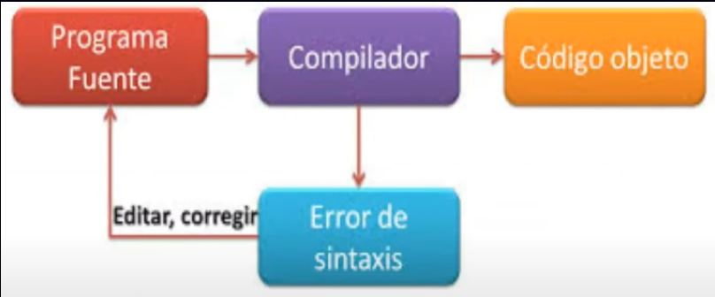

Son los pioneros de los compiladores, ya que en los albores de la informática, los programas se escribían directamente en código máquina, y el primer paso hacia los lenguajes de alto nivel lo constituyen los ensambladores.
Se desarrollaron para poder incrementar la velocidad de programación, reducir los errores de codificación y poder traducir el lenguaje máquina.
Los macroprocesadores se desarrollan para acelerar la codificación de un programa ensamblador.
Se le considera un lenguaje de alto nivel y fueron desarrollados para resolver el problema de la dependencia respecto a la máquina.
Permiten el desarrollo de programas independientes de la máquina, se logra mayor velocidad de programación, programas transportables entre sistemas diferentes y menores requerimientos de conocimiento del Hardware.
Realiza una traducción de un lenguaje de alto nivel a lenguaje máquina.
Es aquel programa que proporciona un archivo objeto en lugar del ejecutable final.
Es la combinación de componentes que actúan conjuntamente y cumplen un determinado objetivo.
Es una variable del sistema tal que una modificación de su magnitud o condición puede alterar el estado del sistema.
Es una variable del sistema cuya magnitud o condición se mide.
Un mecanismo de entrada/salida que permitía que una computadora de propósitos específicos, mucho más económica y limitada, leyera las tarjetas y las fuera convirtiendo a cinta magnética, un medio mucho más rápido, teniéndola lista para que la computadora central la cargara cuando terminara con el trabajo anterior.
Producen rápidamente un programa objeto que puede ser ineficiente respecto de almacenamiento y velocidad de ejecución. Útiles para el desarrollo y prueba de sistema.
Producen con mayor lentitud un código de máquina altamente eficiente en almacenamiento y ejecución. Utilices en etapas de producción de los sistemas.
No producen un programa objeto. Ejecutan directamente un programa fuente. Son útiles en ambientes de desarrollo de programas. Son más lentos que los códigos compilados.
Los programa se ejecutan en el almacenamiento principal: Asignación, Cargador, Cargador absoluto, Cargador de relocalización, Tiempo de carga.
El programa en lenguaje de máquina producido por un traductor debe ser combinado con otros programas en lenguaje de máquina para formar una unidad ejecutable. La combinación de programas es realizar antes del tiempo de ejecución del programa.